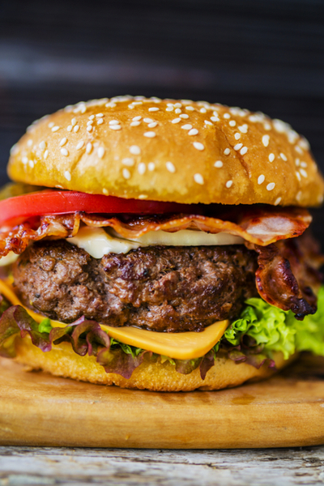

Hamburger

Description
We love classic burger condiments as much as the next person. But what if we told you that you could spread your
burger bun with baba ghanoush, top the burger patties with sun-dried tomatoes, and opt for goat cheese
instead
of cheddar?
That's exactly what happens in these juicy chicken burgers, which are a leaner alternative to the classic
cheeseburgers. Use this recipe as inspiration, then consider all the delicious flavor combinations you could
create. Next up, we're trying a kalamata olive spread in place of the baba ghanoush, and
swapping in some crumbled feta. If you're a fan of turkey burgers, opt for those instead of chicken.
Ingredients
- 2 hamburger buns, split
- 2 chicken or turkey burger patties
- 2 chicken or turkey burger patties
- Freshly ground black pepper
- 1 tablespoon vegetable oil
- 1/2 cup baba ghanoush
- 2 (1/2-inch-thick) goat cheese rounds
- 6 pieces sun-dried tomatoes, thinly sliced
- 2 handfuls mesclun greens or arugula
Steps
- Arrange a rack in the top third of the oven and heat to 350°F. Toast the buns in the oven until warmed
through, 3 to 5 minutes; set aside.
- Heat the oil in a medium frying pan over high heat until shimmering. Add the patties and cook until the
patties are cooked through (burgers should reach an internal temperature of 160°F), 3 to 5 minutes per side.
- Divide the baba ghanoush between the bottom buns and spread into an even layer. Top each with a chicken or
turkey patty. Divide the sun-dried tomatoes over the patty, top with a goat cheese round, divide the greens
over the goat cheese, and close with the top buns.